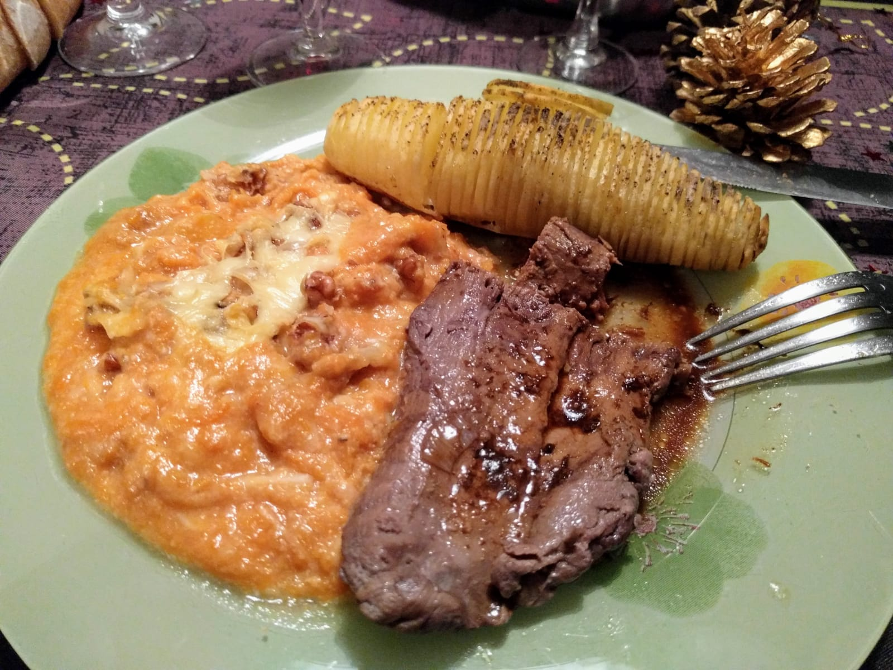

Patates-hérisson

Ici avec un steak de cerf flambé et du gratin aux potiron et aux noix.
Pour 2 personnes :
- 10 patates assez grosses
- Du beurre
- Du sel
- Des épices ou herbes variées, genre poivre, paprika, piment, curcuma, curry…
- Éplucher les patates, et les couper presque en tranches, mais pas vraiment : il faut s'arrêter à environ 3 millimètres de la planche, pour que la patate reste en un seul morceau. Une astuce est de mettre chaque patate entre deux baguettes, et utiliser les baguettes pour arrêter le couteau au bon endroit.
- Faire préchauffer le four à 180°C. Avec un couteau fin, glisser un petit peu de beurre entre les "tranches" de chaque pomme de terre, et les disposer sur un plat à four légèrement beurré.
- Saler les patates, et ajouter des épices. Enfourner pour environ 45 minutes (un peu moins si les patates sont plus petites), servir chaud, par exemple avec du saumon.